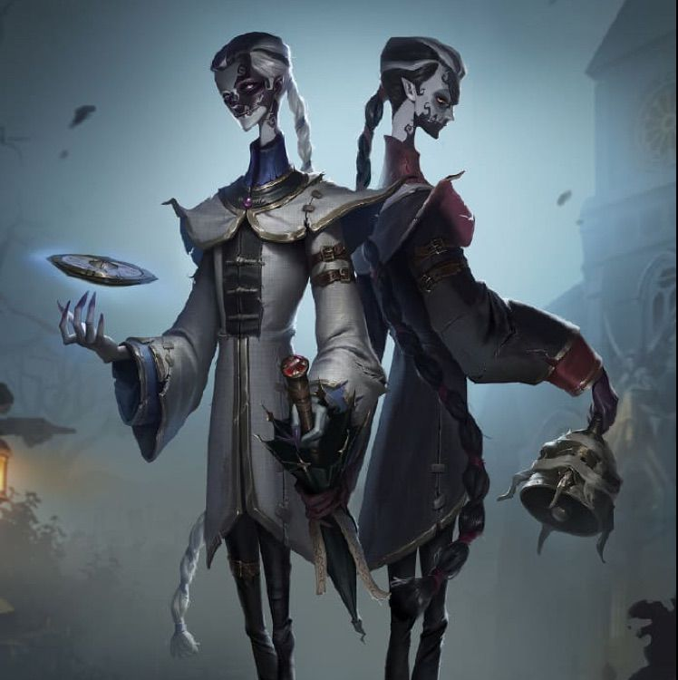
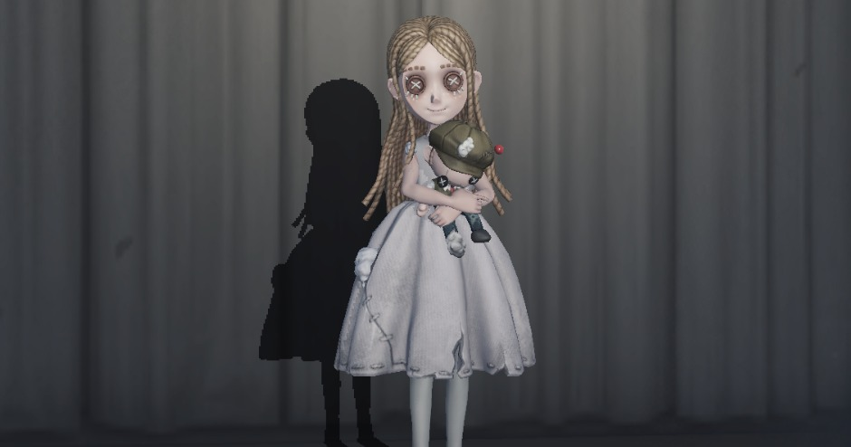

ハンターとは
ハンターとは、サバイバーを追いかける側のキャラクター陣営のことです。4人いるサバイバーのうち3人以上脱落させるのを目標に戦うのがハンターです。 ハンターが勝利するには、対戦中にサバイバーを3人以上脱落させる必要がある。
サバイバーとは
ハンターに追われる側のキャラクター陣営のことです。
サバイバー側プレイヤーは、ハンターの追跡を避けながら、マップに点在する５つの暗号解読機を解読してゲートを開き、ステージから脱出するのがサバイバーです。
ステージから3人以上サバイバーが無事脱出すると、サバイバー陣営の勝利となります。味方の救助や解読成功など、ハンターの注意を分散させて一人でも多くの味方と脱出しよう。